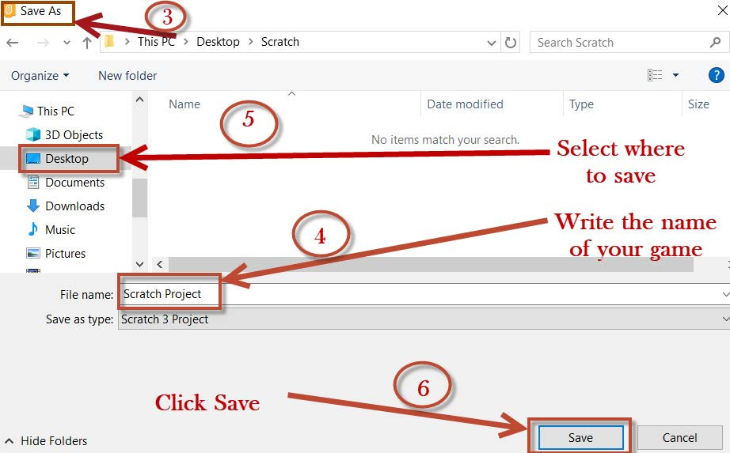

3. The ‘Save as’ dialog box will appear as shown in Figure 25.

4. For file name, delete Scratch Project and write the name of your Project.
5. Select where to save your Project for example, Desktop.
6. Click/press ‘Save’ as shown/identified in Figure 25.
Activity 7
Creating a game which makes a Scratch/Quorum Sprite rotate
To create a program that rotates the Scratch/Quorum ‘Sprite’ (Cat), follow these steps:
Steps
1. Click/press on the ‘Events’ block menu.
2. Drag/use arrow keys and drop the ‘when clicked/pressed’ block on the script area.